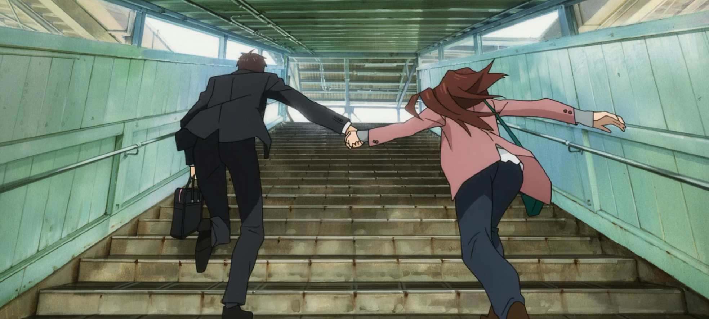
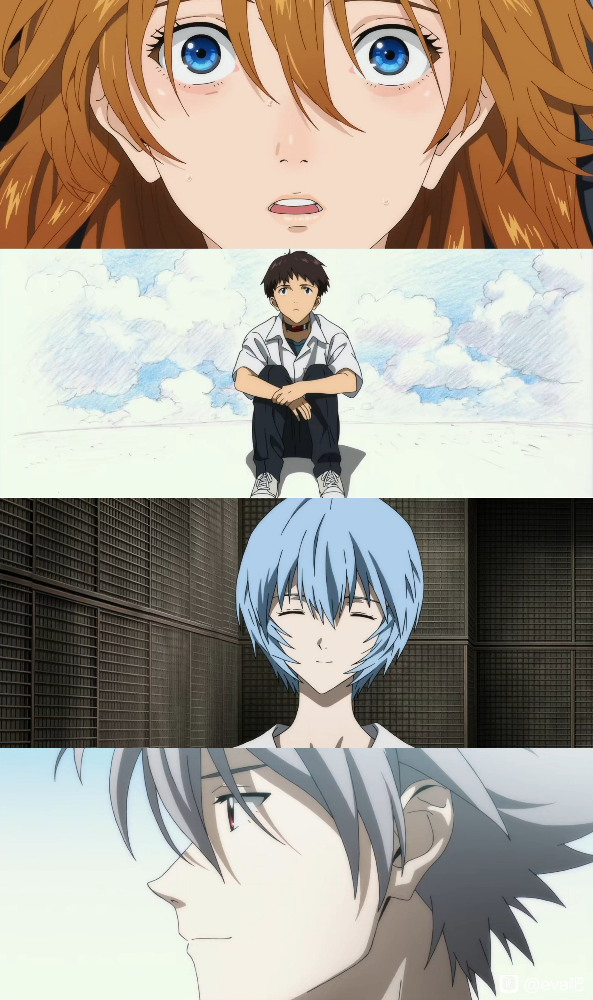

I first watched EVA when I was a middle school student. At that time adolescence I saw the same teenage protagonists confusion and growth is very much the same feeling.
I grew up, but eva's new work was difficult to produce for various reasons. Last year, the last one was finally released, and I couldn't help but cry when I saw the people in the show reconciled with themselves and returned to real life.
This is my favorite scene from the Final. Shinji is back to real life with Mari.
They are reconciled to themselves and are completed.
I have grown up. Goodbye, my youth. Goodbye, all the Evangelions.